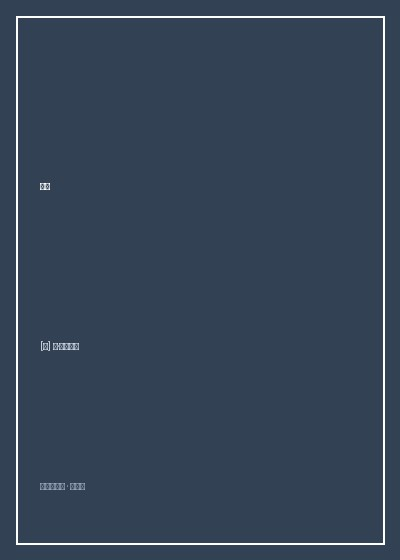

《香水：一个谋杀犯的故事》

总体观点
《香水：一个谋杀犯的故事》（Das Parfum: Die Geschichte eines Mörders）是20世纪后半叶德语文学界最奇谲、最震撼人心的感官寓言杰作。聚斯金德以手术刀般精准古典的巴洛克文字，将读者猛然抛入十八世纪恶臭熏天的巴黎底层。主人公让-巴蒂斯特·格雷诺耶（Jean-Baptiste Grenouille）降生在巴黎最肮脏臭秽的鱼市菜摊腐肉堆下，母亲因遗弃婴儿被送上绞架，而这个孤儿却展现出如扁虱般惊人的生存本能——无论饥饿、天花、火灾或制革厂的致命苦役，都无法将他扼杀。
小说的核心隐喻在于：格雷诺耶拥有一具全世界绝无仅有的神异嗅觉器官，能辨析并记忆数以万计甚至在十里外随风飘散的分子气味；但他自身却荒诞地“没有任何体味”——没有属于人的体香，意味着在人世间如同一个不存在的幽灵。为了在世人面前确立自身存在的绝对主权，这个气味恶魔将谋杀转化为一种登峰造极的“艺术创造”。从巴黎街头第一次勒死散发清纯体香的红发少女起，他历经香水师傅巴尔迪尼的作坊训练、中央高原死火山洞穴七年避世修行，最终挺进世界香水之都格拉斯。
在格拉斯，他用最冷酷纯熟的“油脂冷吸法”，连续猎杀了二十四位含苞待放的纯洁少女，将她们的处子体香萃取封存为一小瓶足以倾覆人间的终极香水。在断头台即将斩首行刑的千钧一发之际，格雷诺耶仅仅将这瓶香水在手帕上洒出一滴，全城数万人包括主教、法官与刽子手瞬间丧失理智，跪倒在地顶礼膜拜并将刑场演变为一场惊世骇俗的肉欲狂欢。小说以格雷诺耶重返巴黎墓地倒空香水、被底层饥饿群氓因狂热之爱分食撕碎作为惊悚终局，对法西斯蛊惑术、极端唯美主义与人类爱欲的荒诞本质完成了终极解构。
核心观点
-
1. 气味即呼吸与灵魂：掌控了气味就掌控了人类情感的开关
人们可以拒绝言语说服，可以闭上双眼逃避视觉，却无法停止呼吸。与呼吸相伴的气味能绕过理性防线，直击人类神经深处最原始的爱欲与顺从。
格雷诺耶调配出模拟人类体味的假香水喷在身上，原本对他避之唯恐不及的面包师傅与神父立刻对他投来温和慈爱的目光，主动让座致意。 -
2. 扁虱生存哲学：在极端恶劣窒息的荒原上静默等待时机
格雷诺耶如同树枝上一只微小的扁虱，不发一声、只求极低能量消耗，忍受着人世间的全部毒打与蔑视，只为等待属于自己的那一滴鲜血宿命。
在残暴制革匠格里马的皮作坊里，其他学徒大多死于炭疽热，而格雷诺耶泡在恶臭硝石水与腐皮堆里整整七年，身体畸形瘸腿却坚硬如铁顽强存活。 -
3. 自我气味的缺失恐惧：没有气味的人在宇宙中形同不存在的幽灵
当格雷诺耶在中央高原火山洞穴深处隐居七年，突然惊觉自己身上竟然没有任何属于自己的气味时，存在主义的极致恐惧瞬间击碎了他的自满幻梦。
在死火山密室里，格雷诺耶疯狂地把鼻子凑向自己的手腕、腋下、脖颈狂嗅，吸入的只有虚无的岩石尘埃，这一发现比死亡更令他毛骨悚然。 -
4. 以杀戮淬炼美学：极端唯美主义对人类道德伦理的彻底践踏
在纯粹艺术家眼中，道德与生命尊严毫无价值，活生生的人体不过是提取神圣美的原料介质。剥夺生命只是为了在玻璃香水瓶中凝固那一缕刹那芳华。
格雷诺耶用抹满动物油脂的棉布严密裹住刚死去的绝色少女洛尔的冰冷躯体，平静地等待油脂吸收她最后的体香，心中毫无悔意只有对化学反应的精密计算。 -
5. 狂热之爱的毁灭性终局：分食与撕碎作为爱欲的终极讽刺
当人类面对无法抗拒的至高魅力时，崇拜与爱慕会瞬间异化为不可遏制的占有欲与吞噬暴行。爱一个人爱到极致，便是将其骨肉撕碎咽入腹中。
在巴黎盲人圣婴公墓的月光下，几十名流浪汉与强盗因无法抗拒香水的诱惑扑向格雷诺耶，用牙齿与匕首将其瓜分殆尽，事后心中却感到了难以言喻的纯洁幸福。
全书结构
-
第一部 第一至八章 恶臭之都的诞生与扁虱的童年
巴黎鱼市菜摊下的血腥降生、母亲被判绞刑、乳母因婴儿没有气味拒哺送交孤儿院、在制革匠格里马的皮坑中熬过致命童年。
聚斯金德用长达数页描绘十八世纪巴黎无所不在的腐烂排泄物恶臭，格雷诺耶在恶臭中心闭着双眼吸纳千百种细微气味分子。 -
第一部 第九至二十二章 巴尔迪尼的作坊与第一次杀戮
在兑水桥上的老牌香水大师巴尔迪尼面前展现神乎其技的调香奇迹，习得蒸馏提纯法；在塞纳河畔勒死初熟红发少女捕获其体香。
格雷诺耶无需天平与滴管，抓起香精瓶随手倾倒，瞬间复刻并超越了当时轰动全巴黎的“阿莫尔与普绪客”香水，震惊巴尔迪尼。 -
第二部 第二十三至三十四章 火山密室避世与侯爵的伪科学实验
离开巴黎前往法国南部，在中央高原普隆·迪康塔尔荒僻洞穴中隐居七年沉迷气味王国；发现自身无味后下山，沦为侯爵致命地气理论的展示品。
格雷诺耶在侯爵安排下洗去泥垢、喷上自制的“人类气味假香水”，原本视他为野兽的学者名流立即将他拥抱为优雅的文明同侪。 -
第三部 第三十五至五十节 格拉斯的连环杀戮与断头台上的狂欢大赦
进入世界香水之都格拉斯，在制香作坊掌握冷吸法，连续谋杀二十四名绝色少女提取体香，在全城搜捕中完成终极香水；刑场上洒出香水让万民跪拜。
断头台前原本渴望将其碎尸万段的市民与主教在吸入一缕香水后痛哭流涕，高呼他是“人间的天使”，法官甚至宣布撤销判决认其为养子。 -
第四部 第五十一节 重返巴黎圣婴公墓与自我毁灭的盛宴
对人类愚蠢的崇拜感到极度厌倦，格雷诺耶在闷热夏夜返回出生地巴黎盲人圣婴公墓，将整瓶终极香水倒在头顶，被饥渴的贫民群氓分食撕碎。
“半小时后，让-巴蒂斯特·格雷诺耶在地球表面上彻底消失了，连一根头发也没有留下。人群散去时，他们感到这辈子第一次出于纯粹的爱做了一件事。”